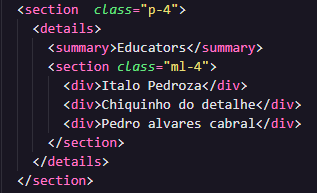

Usando a tag Details:
A tag <details> se parece com um menu accordion, onde os detalhe inicialmente encontram-se escondidos. Mas quando o usuário clica na seta, o contéudo escondido é apresentado.
Educators
Italo Pedroza
Chiquinho do detalhe
Pedro alvares cabral
